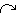

Influence arrow
To say that “A influences B” (i.e. to draw an influence arrow from A to B) means that A is used to calculate a value for B: in other words, the equation for calculating B will include A.
Rules
You can drag an influence arrow from and to most model elements. The exceptions and special cases are noted here below. Note that if you try to drag an influence arrow to a model element that cannot receive one, then it turns blue instead of green, and you will not be able to connect them together.
 Compartments
Compartments
- Elements that influence a compartment are used only to calculate the initial value of the compartment. Thereafter, the value of the compartment is calculated by adding the flows in and subtracting the flows out. It is not common therefore to draw an influence arrow to a compartment, though it is possible (in order to calculate the initial value). For example, although one may informally say “water temperature influences fish population size”, in the model, temperature must actually influence one of the processes (reproduction, death and so forth) which change the fish population size. The influence arrow from the temperature variable must therefore point to one (or more) of the flows in or out , and not to the compartment representing fish population size itself.
 Submodels
Submodels
- When working with submodels, you may find that an input parameter (A) in one submodel actually corresponds to a variable (B) in another, especially when the two submodels were developed separately, then later brought together. In order to get rid of the duplication, draw an influence arrow from B to the influence arrow from A. This is the only circumstance in which it is possible to draw one influence arrow pointing to another. Input parameter A will disappear, and the influence arrows will be re-drawn to show B directly influencing the element previously influenced by A.
- You can drag an influence arrow to a submodel boundary. This has no meaningful modelling function, but acts as a temporary placeholder to the influence arrow until it is connected to an element inside the submodel. In order to do this, drag an influence arrow from the node at the submodel boundary to the desired element inside the submodel.
- You cannot drag an influence arrow from a submodel boundary, other than to complete an influence arrow drawn to the submodel boundary (as described in the previous bullet point).
Influence and  role arrows
role arrows
- You cannot drag an influence to a role arrow or to another influence arrow.
In : Contents >> Model diagram elements